import torchDeep Learning
PyTorch
Python
PyTorch
El Deep Learning está en todas partes, desde las cámaras de los smartphones hasta los asistentes de vos o los vehículos autónomos. En este curso, descubriras esta potente tecnología y aprenderás a aprovecharla con PyTorch, una de las bibliotecas de aprendizaje profundo más populares. Al finalizar tu recorrido por este documento, serás capaz de aprovechar PyTorch para resolver problemas de clasificación y regresión utilizando el aprendizaje profundo.
Introducción a PyTorch (biblioteca de Deep Learning)
Antes de comenzar a crear modelos complejos, te haré conocer PyTorch, un librería de aprendizaje profundo. Aprenderás a manipular tensores, crear estructuras de datos de PyTorch y construir tu primera red neuronal en PyTorch con capas lineales.
El Deep Learning impulsa muchas innovaciones recientes y emocionantes, tales como la traducción de idiomas, coches autónomos, diagnósticos médicos y chatbots.

Qué es Deep Learning?

Deep Learning (aprendizaje profundo) es un subconjunto del aprendizaje automático (machine learning). La estructura del modelo es una red de entradas (input), capas ocultas (hidden layers) y salidas (output), como se muestra en la siguiente imagen:

Como apreciamos en la figura, una red puede tener una o muchas capas ocultas

La intuición original detrás del aprendizaje profundo era crear modelos inspirados en el cerebro humano, sobre todo por cómo aprende el cerebro humano: a través de células interconectadas llamadas neuronas. Es por esto que llamamos a los modelos de aprendizaje profundo Redes Neuronales.

Estas estructuras de modelos en capas requieren muchos más datos en comparación con otros modelos de aprendizaje automático para derivar patrones. Generalmente hablamos de al menos cientos de miles de puntos de datos.
PyTorch: un framework del deep learning

Si bien existen varios framework y paquetes para implementar el aprendizaje profundo en cuanto a algoritmos, nos centraremos en PyTorch, uno de los frameworks más populares y mejor mantenidos. PyTorch fue desarrollado originalmente por Meta IA como parte del laboratorio de investigación de inteligencia artificial de Facebook antes de que pasara a depender de la fundación Linux.
Está diseñado para ser intuitivo y fácil de usar, compartiendo muchas similitudes con la biblioteca de Python NumPy.
PyTorch Tensors
Podemos importar el módulo PyTorch llamando a
La estructura de datos fundamental en PyTorch es un tensor, que es similar a una matriz.
Puede soportar muchas operaciones matemáticas y constituye un componente básico para nuestras redes neuronales.
Se pueden crear tensores a partir de listas de Python o matrices NumPy utilizando la clase
torch.tensor()esta clase convierte los datos a un formato compatible para el aprendizaje profundo.
mi_lista = [[1,2,3], [4,5,6]]
tensor = torch.tensor(mi_lista)
print(tensor)tensor([[1, 2, 3],
[4, 5, 6]])Atributos de los Tensores
Podemos llamar a tensor.shape para mostrar la forma de nuestro objeto recién creado.
print(tensor.shape)torch.Size([2, 3])Y tensor.dtype() para mostrar su tipo de datos, aquí un entero de 64 bits.
print(tensor.dtype)torch.int64Verificar la forma y el tipo de datos garantiza que los tensores se alineen correctamente con nuestro modelo y tarea, y puede ayudarnos en caso de depuración.
Operaciones con Tensores
Se pueden sumar o restar tensores de PyTorch, siempre que sus formas sean compatibles.
a = torch.tensor([[1,1], [2,2]])
b = torch.tensor([[2,2],[3,3]])
c = torch.tensor([[2,2,2], [3,3,5]])print(a + b)tensor([[3, 3],
[5, 5]])Cuando las dimensiones no son compatibles, obtendremos un error.
También podemos realizar la multiplicación por elemento, lo que implica multiplicar cada elemento correspondiente.
print(a*b)tensor([[2, 2],
[6, 6]])También esta incluida la multiplicación de matrices, que no es más que uno forma de combinar dos matrices para crear una nueva.
print(a @ b)tensor([[ 5, 5],
[10, 10]])Detras de escena, los modelos de aprendizaje profundo realizan innumerables operaciones como la suma y multiplicación para procesar datos y aprender patrones.
Redes Neuronales y Capas
Vamos a contruir nuestra primer red neuronal usando tensores de PyTorch.
Una red neuronal consta de capas de entrada, ocultas y de salida.

La capa de entrada contiene las características del conjunto de datos,

La capa de salida contiene las predicciones,

Y hay capas ocultas (hidden layers) en el medio

Si bien una red puede tener cualquier cantidad de capas ocultas, comenzaremos construyendo una red sin capas ocultas donde la capa de salida es una capa lineal.

Aquí, cada neurona de entrada se conecta a cada neurona de salida, lo que se denomina una red “totalmente conectada”.
Esta red es equivalente a un modelo lineal y nos ayuda a comprender los fundamentos antes de agregar complejidad.
Usaremos el módulo torch.nn para construir nuestras redes. Esto hace que el código de la red sea más conciso y flexible y se importa convencionalmente como nn.
import torch.nn as nnAl diseñar una red neuronal, las dimensiones de las capas de entrada y salida están predefinidas.
La cantidad de neuronas en la capa de entrada es la cantidad de características en nuestro conjunto de datos.
Y el número de neuronas en la capa de salida es el número de clases que queremos predecir.
Digamos que creamos un input_tensor con forma de \(1\times 3\).
import torch
import torch.nn as nn
input_tensor = torch.tensor(
[[0.3471, 0.4547, -0.2356]]
)Podemos pensar en esto como una fila con tres “carectísticas” o “neuronas” .
A continuación, pasamos este input_tensor a una capa lineal, que aplica una función lineal para realizar predicciones.

Para ello usaremos nn.Linear() toma dos argumentos: int_features es el número de características en nuestra entrada ( en este caso, tres) y out_features es el tamaño del tensor de salida (en este caso, dos).

linear_layer = nn.Linear(
in_features = 3,
out_features = 2
)Especificar correctamente in_features garantiza que nuestra capa lineal pueda recibir el input_tensor.
Por último, pasamos input_tensor a linear_layer para generar una salida.
output = linear_layer(input_tensor)
print(output)tensor([[-0.2560, 0.5373]], grad_fn=<AddmmBackward0>)Tenga en cuenta que esta salida tiene dos características o neuronas debido a las out_features especificadas en nuestra capa lineal.
Cuando input_tensor se pasa a linear_layer, se realiza una operación lineal para incluir pesos y sesgos.

Pesos (weights) y Sesgos (biases)
Cada capa lineal tiene un conjunto de pesos y sesgos asociados. Estas son las cantidades clave que definen una neurona.
print(linear_layer.weight)Parameter containing:
tensor([[ 0.4779, 0.3367, 0.3743],
[-0.4978, 0.4398, 0.2074]], requires_grad=True)print(linear_layer.bias)Parameter containing:
tensor([-0.4867, 0.5590], requires_grad=True)Los pesos reflejan la importancia de diferentes características.
El sesgos es un término adicional que es independiente de los pesos, y proporciona a las neurona una salida de referencia.
Al principio, la capa lineal asigna pesos y sesgos aleatorios; estos se ajustan posteriormente.
Imaginemos nuestra red totalmente conectada en acción.
Digamos que tenemos un conjunto de datos meteorológicos con tres características: temperatura (temperature), humedad (humidity) y viento (wind). Y queremos predecir si lloverá (rain) o estará nublado (cloudy).
La característica humeda tendrá un peso más significativo en comparación a las demás características, ya que es un fuerte predictor de lluvia y nubes.
Los datos meteorológicos corresponden a una región tropical con alta probabilidad de lluvia, por lo que agrega un sesgo para tener en cuenta esta información de referencia.
Con esta información, nuestro modelo hace una predicción.
Capaz y Parámetros Ocultos
Hasta ahora, hemos utilizado una capa de entrada y una capa de lineal. Ahora, agregaremos más capas para ayudar a la red a aprender patrones complejos.
Apilamiento de capaz con nn.Sequential()
Apilaremos tres capas lineales usando nn.Sequential(), un contenedor de PyTorch para apilar capas en secuencia. Esta red toma la entrada, la pasa a cada capa lineal en secuencia y devuelve la salida.
model = nn.Sequential(
nn.Linear(n_features, 8),
nn.Linear(8, 4),
nn.Linear(4, n_classes)
)En este caso, las capas dentro de
nn.Sequential()son capas ocultas.n_featuresrepresenta el número de características de entrada yn_classesrepresenta el número de clases de salida, ambas definidas por el conjunto de datos.
Adición de capas
Podemos añadir tantas capas ocultas como queramos.

La dimensión de cada capa coincide con la dimensión de salida de la anterior.
model = nn.Sequential(
nn.Linear(10, 18),
nn.Linear(18, 20),
nn.Linear(20, 5)
)En nuestro ejemplo de tres capas, la primera capa toma 10 características y genera 18. La segunda toda 18 y genera 20. Finalmente, la tercera toma 20 y genera 5.
Las capas están hechas de neuronas

Una capa está completamente conectada cuando cada neurona se vincula a todas las neuronas de la capa anterior, como se muestra en rojo en la figura.
Cada neurona es una capa lineal:
realiza una operación lineal utilizando todas las neuonras de la capa anterior.
Por tanto, una sola neurona tiene \(N+1\) parámetros que se puede aprender, siendo la dimensión de salida la capa anterior, más 1 para el sesgo.
Parámetros y Capacidad del Modelo
Aumetar el número de capas ocultas aumenta el número total de parámetros en el modelo, también conocido como capacidad del modelo. Los modelos de mayor capacidad pueden manejar conjuntos de datos más complejos, pero su entrenamiento puede llevar más tiempo.
Una forma eficaz de evaluar la capacidad de un modelo es calcular su número total de parámetros.
Vamos a desglosarlo con una red de dos capas,
model = nn.Sequential(
nn.Linear(8, 4),
nn.Linear(4, 2)
)La primera capa tiene 4 neuronas, cada neurona tiene 8 pesos y un sesgo, lo que da como resultado 36 parámetros.
La segunda capa tiene 2 neuronas, cada neurona tiene 4 pesos y un sesgo, para un total de 10 parámetros.
Sumándolos todos, este modelo tiene 46 parámetros que se pueden aprender en total
También podemos calcular esto en PyTorch usando el método .numel(). Este método devuelve el número de elementos de un tensor.
total = 0
for parameter in model.parameters():
total += parameter.numel()
print(total)46Balance entre complejidad y eficiencia

Comprender el recuento de parámetros nos ayuda a equilibrar la complejidad y la eficiencia del modelo. Demasiados parámetros pueden dar lugar a tiempos de entrenamiento largos o sobreajuste, mientras que muy pocos pueden limitar la capacidad de aprendizaje.
Hiperparámetros y arquitectura de redes neuronales
Para entrenar una red neuronal en PyTorch, primero tendremos que entender componentes adicionales, como las funciones de activación y pérdida. Entonces nos daremos cuenta de que entrenar una red requiere reducir mínimo esa función de pérdida, lo que se hace calculando gradientes. Aprenderemos a utilizar estos gradientes para actualizar los parámetros de tu modelo.
Funciones de Activación
Hasta ahora hemos visto redes neuronales formadas únicamente por capas lineales.

Podemos agregar no linealidad a nuestros modelos usando funciones de activación. Discutiremos dos funciones de activación:
Sigmoid para clasificación binaria y,
Softmax para clasificación multiclase.
Esta no linealidad permite que las redes aprendan cosas más complejas, interacciones entre entradas y objetivos que son relaciones no linealeales.
Llamaremos a la salida de la última capa lineal la “pre-activación”. Salida, que pasaremos a funciones de activación para obtener la salida transformada.
Función Sigmoid
La función de activación sigmoidea se utiliza ampliamente para problemas de clasificación binaria. Digamos que estamos tratando de clasificar un animal como mamífero o no?. Tenemos tres datos: el número de extremidades, si pone huevos y si tiene pelo. Las dos últimas son variables binarias: 1 si es si, 0 si no.

Pasar la entrada a un modelo con dos capas lineales devuelve una única salida: el número 6, tal como apreciamos en la siguiente figura:

Este número aún no es interpretable. Tenemos que pasar el número 6 por la función sigmoide, transformandolo en un rango que represente la probabilidad entre cero y uno.

Si el resultado está más cerca de uno (mayor que 0.5), lo etiquetamos como clase uno (mamífero). Si fuese menor que 0.5 la predección sería cero (no un mamifero).

Ahora, implementemos sigmoide en PyTorch.
import torch
import torch.nn as nn
input_tensor = torch.tensor([[6]])
sigmoid = nn.Sigmoid()
output = sigmoid(input_tensor)
print(output)tensor([[0.9975]])Normalmente, nn.Sigmoid() se agrega como el último paso en nn.Sequential(), transformando automáticamente la salida de la capa lineal final.
model = nn.Sequential(
nn.Linear(6, 4), # Primera capa lineal
nn.Linear(4, 1), # Segunda capa lineal
nn.Sigmoid() # Función de activación
)Curiosamente, una red neuronal con solo capas lineales y una activación sigmoidea se comporta como una Regresión Logística. Más adelante agregaremos más capas y activaciones para comprender realmente el verdadero potencial del Deep Learning.
Función Softmax
Usamos softmax, otra función de activación popular, para clasificación multiclase que implica más de dos etiquetas de clase.
Digamos que tenemos tres clases:
Pajaro o Bird (0)
Mamífero o Mammal (1)
Reptil o Reptile (2)

En esta red, Softmax toma una dimensión tridimensional, salida de preactivación y genera una salida de la misma forma, una por tres.
La salida es una distribución de probabilidad:
Por cada elemento está entre cero y uno, y
los valores suman uno.

Aquí, la predicción es para la segunda clase, mamíferos, que tiene la probabilidad más alta 0.842.

En PyTorch, usamos nn.Softmax()
import torch
import torch.nn as nn
input_tensor = torch.tensor(
[[4.3, 6.1, 2.3]]
)
probabilities = nn.Softmax(dim=-1)
# dim = -1 indica que softmax se aplica a la última dimensión de input_tensor
output_tensor = probabilities(input_tensor)
print(output_tensor)tensor([[0.1392, 0.8420, 0.0188]])Similar a sigmoide, softmax puede ser la última capa en nn.Sequential.
Paso hacia adelante
Hemos explorado tensores, redes pequeñas y funciones de activación. Ahora profundicemos en la generación de predicciones.
Este proceso se llama “ejecutar un paso hacia adelante” a través de una red.
Qué es una paso hacia adelante (Forward Pass)?
Es cuando los datos de entrada fluyen a través de una red neuronal en dirección hacia adelante, para producir resultados o predicciones, pasa a través de cada capa de red.

Los calculos transforman los datos en nuevas representaciones en cada capa, que pasa a la siguiente capa hasta que se produce el resultado final.
El propósito del paso hacia adelante es pasar datos de entrada a través de la red y producir predicciones o resultados basados en los parámetros aprendidos del modelo, también conocidos como pesos y sesgos.
Este proceso es esencial tanto para el entrenamiento como para realizar nuevas predicciones.
El resultado final puede ser clasificaciones binarias, clasificaciones multiclase o predicciones numéricas (regresiones).

Veremos un ejemplo de cada uno.
Digamos que tenemos datos de entrada de cinco animales, con seís características o neuronas por punto de datos.
input_data = torch.tensor(
[[-0.4421, 1.5207, 2.0607, -0.3647, 0.4691, 0.0946],
[-0.9155, -0.0475, -1.3645, -0.6336, -1.9520, -0.3398],
[0.7406, 1.6763, -0.8511, 0.2432, 0.1123, -0.0633],
[-1.6630, -0.0718, -0.1285, 0.5396, -0.0288, -0.8622],
[-0.7413, 1.7920, -0.0883, -0.6685, 0.4745, -0.4245]]
)Creamos una pequeña red con dos capas lineales y una función de activación sigmoidea en secuencia.
import torch
import torch.nn as nn
model = nn.Sequential(
nn.Linear(6, 4),
nn.Linear(4, 1),
nn.Sigmoid()
)La primera capa toma seis características como entrada, genera cuatro.
La segunda capa procesa esto para obtener una probailidad final.
El resultado de nuestra clasificación binaria es una única probabilidad entre cero y uno para cada uno de nuestros cinco animales.
output = model(input_data)
print(output)tensor([[0.6029],
[0.6443],
[0.4530],
[0.6021],
[0.5374]], grad_fn=<SigmoidBackward0>)Recuerde que comúnmente utilizamos un umbral de 0.5 para convertirlos en etiquetaas de 0 y 1, es decir:
Class = 1 para \(output \geq 0.5\)
Class = 0 para \(output \leq 0.5\)
Esta salida no será significativa hasta que usemos retropropagación para actualizar los pesos y sesgos de las capas. Hablaremos más sobre esto más adelante.
Clasificación Multi-Class: Forward Pass
El modelo sería similar si quisiéramos ejecutar una clasificación de múltiples clases.
Digamos que estamos prediciendo tres clases: mamíferos (Class 1), aves (Class 2) o reptiles (Class 3).
Específicamos que nuestro modelo tiene tres clases, estableciendo este valor como la dimensión de salida de la última capa lineal.
n_classes = 3
model = nn.Sequential(
nn.Linear(6, 4),
nn.Linear(4, n_classes),
nn.Softmax(dim=-1)
)Usamos Softmax en lugar de Sigmoid, con \(dim = -1\) para indicar los 5 animales. Los anímales tiene la misma última dimensión que la salida de la última capa lineal.
output = model(input_data)
print(output.shape)torch.Size([5, 3])Utilizando la misma entrada que antes, la forma de salida es \(5\times 3\).
print(output)tensor([[0.3668, 0.3895, 0.2438],
[0.3165, 0.1723, 0.5112],
[0.3006, 0.3020, 0.3974],
[0.3483, 0.3040, 0.3477],
[0.2686, 0.2752, 0.4562]], grad_fn=<SoftmaxBackward0>)Note que cuando imprimimos la salida, cada fila representa las probabilidades de tres clases, que suman uno. La etiqueta prevista para cada fila se asigna a la clase con la mayor probabilidad.
En nuestro ejemplo, todas las filas son mamíferos.
Regresión: Forward Pass
El último modelo que analizaremos es la regresión: predecir valores numéricos continuos.
Ahora usaremos las mismos datos para predecir el peso de los animales en función de sus propiedades.
model = nn.Sequential(
nn.Linear(6, 4),
nn.Linear(4, 1)
)
output = model(input_data)
print(output)tensor([[-0.6805],
[ 0.1887],
[-0.2363],
[ 0.0359],
[-0.3907]], grad_fn=<AddmmBackward0>)Esta vez no hay función de activación al final, y la última dimensión de la última capa lineal devuelve una salida con una característica.
Las dimensiones de salida son \(5\times 1\): cinco valores continuos, uno para cada fila.
Funciones de Pérdida para Evaluar las Predicciones del Modelo
Hemos generado predicciones ejecutando un paso hacia adelante, el siguiente paso es ver qué tan buenas son nuestras predicciones en comparación con los valores reales.
Función de pérdida
La función de pérdida, otro componente de las redes neuronales, nos dicen qué tan bueno es nuestro modelo para hacer predicciones durante el entrenamiento.
Toma una predicción del modelo \((\hat{y})\) y una etiqueta verdadera \(y\), o dato real, y genera un dato flotante, tal como se puede apreciar en el siguiente esquema

Utilicemos nuestra multiclase
| Hair | Feathers | Eggs | Milk | Fins | Legs | Tail | Domestic | Catsize | Class |
|---|---|---|---|---|---|---|---|---|---|
| 1 | 0 | 0 | 1 | 0 | 4 | 0 | 0 | 1 | 0 |
modelo de clasificación que predice si un animal es un mamífero (0), ave (1) o reptil (2).
Si nuestro modelo predice que la clase es igual a cero, es correcto y el valor de la pérdida será bajo.
Una predicción incorrecta haría que el valor de la pérdida fuera alto.
Nuestro objetivo es minimizar las pérdidas.
Calculo de la pérdida
La pérdida se calcula utilizando una función de pérdida, \(F\), que toma el dato real y el predicho, es decir,
\[ Loss = F(y, \hat{y}) \]
En nuestro ejemplo de los animales, los valores posibles para nuestra verdadera clase de \(y\) son los números enteros 0, 1 o 2, es decir, \(y \in \{0, 1 , 2\}\).
\(\hat{y}\) es un tensor con las mismas dimensiones que el número de clases \(N\), es decir, \(\hat{y}\in \{-5.2, 4.6, 0.8\}\). Si \(N=3\) entonces la salidad softmax es un tensor de forma \(1\times 3\).
Codificación one-hot
Usamos codificación one-hot para convertir un entero \(y\) en un tensor de ceros y unos para que podamos comparar para evaluar el rendimiento del modelo.

Por ejemplo, si \(y=0\) con tres clases, la forma codificada es 1, 0, 0 como se aprecia en Figura 1.
Podemos importar torch.nn.functional como F para evitar la codificación one-hot manual.
import torch.nn.functional as F
print(F.one_hot(torch.tensor(0), num_classes = 3))tensor([1, 0, 0])En el primer ejemplo, la verdad fundamental es cero (la primera clase). Tenemos 3 clases, por lo que la función genera un tensor de tres elementos con uno en la primera posición y ceros en el resto.
print(F.one_hot(torch.tensor(1), num_classes = 3))tensor([0, 1, 0])Notemos ahora que si \(y=1\) (la segunda clase), el tensor de salida tiene un uno en la segunda posición y ceros en caso contrario.
print(F.one_hot(torch.tensor(2), num_classes = 3))tensor([0, 0, 1])Por último, si \(y=2\) (tercera clase), el tensor de salida tiene un uno en la última posición y ceros en el resto de los casos.
Función de Pérdida Cross Entropy en PyTorch
Una vez completada la codificación, podemos pasarla junto con nuestras predicciones a una función de pérdida. Lo que almacenaríamos será el tensor de “puntuaciones”.
from torch.nn import CrossEntropyLoss
scores = torch.tensor([-5.2, 4.6, 0.8])
one_hot_target = torch.tensor([1,0,0])La función de pérdida más comunmente utilizada para la clasificaci´øn es la pérdida de entropía cruzada.
Comencemos definiendo nuestra función de pérdida como “criterio”. Luego le pasamos el método .double() del tensor de puntuaciones y del tensor one_hot_target.
criterion = CrossEntropyLoss()
print(criterion(scores.double(), one_hot_target.double()))tensor(9.8222, dtype=torch.float64)Esto garantiza que los tensores estén en el formato correcto para la función de pérdida. La salida es el valor de pérdida calculado.
En resumen, la función de pérdida toma como entrada el tensor de puntuaciones, que es el modelo, predice antes de la función softmax final y la etiqueta de verdad codificada one-hot. Emite un único flotante, la pérdida de esa muestra.

Recordemos que nuestro objetivo es minimizar esa pérdida.
Utilizar derivadas para Actualizar los Parámetros del Modelo
Veamos ahora cómo podemos minímizar la pérdida. Sabemos que un modelo predice mal cuando la pérdida es alta. Podemos utilizar derivadas o gradientes para minimizar esta pérdida.

Imaginemos la función de pérdida como un valle. La derivada representa la pendiente, es decir qué tan pronunciada sube o baja la curva.
Las pendientes pronunciadas, mostradas con flechas rojas, indican derivadas altas y pesos grandes.
Las pendientes más suaves, representadas por flechas verdes, tienen derivadas pequeñas y pesos más pequeños.
En el fondo del valle, mostrado por la flecha azul, la pendiente es plana y la derivada es cero. Este punto es el mínimo de la función de pérdida que pretendemos alcanzar.
Funciones Convexas y No-Convexas
Las funciones convexas tienen un mínimo global.

Las funciones no convexas, como las funciones de pérdida, tienen múltiples mínimos locales, donde el valor es inferior al de los puntos cercanos pero no el más bajo en general.
Al minimizar las funciones de pérdida, nuestro objetivo es localizar el mínimo global cuando \(x\) es aproximadamente uno.
Conexión de derivadas y entrenamiento de modelos
Durante el entrenamiento, ejecutamos un paso hacia adelante en las características y calculamos la pérdida comparando las predicciones con el valor objetivo.

Recuerde que los pesos y sesgos de las capas se inicializan aleatoriamente cuando se crea un modelo. Los actualizamos durante el entrenamiento mediante un paso hacia atrás o retropropogación.
En el Deep Learning, las derivadas se conocen como gradientes.

Calculamos los gradientes de la función de pérdida y los usamos para actualizar los parámetros del modelo. Incluyendo pesos y sesgos, con retropropagación, repitiendo hasta que las capas esten sintonizadas.
Backpropagation (Retropropagación)
Durante la retropropagación, si consideramos una red de tres capas lineales:
podemos calcular gradientes de pérdida locales con respecto a \(L_2\)
Usamos \(L_2\) para calcular el gradiente \(L_1\)
Y repetimos hasta llegar a la capa inicial \(L_0\).

Veamos esto con PyTorch:
model = nn.Sequential(nn.Linear(16, 8),
nn.Linear(8, 4),
nn.Linear(4, 2))
prediction = model(sample)
criterion = CrossEntropyLoss()
loss = criterion(prediction, target)
loss.backwardDespués de ejecutar un paso hacia adelante, definimos una función de pérdida, aquí CrossEntropyLoss() y úselo para comparar predicciones con valores objetivo.
Usando .backward(), calculamos gradientes basados en esta pérdida, que se almacenan en los atributos .grad de los pesos y .bias de los sesgos de cada capa.
model[0].weight.grad
model[0].bias.grad
model[1].weight.grad
model[1].bias.grad
model[2].weight.grad
model[2].bias.gradCada capa del modelo se puede indexar comenzando desde cero para acceder a sus pesos, sesgos y gradientes.
Actualizar Manualmente los Parámetros del Modelo
Para actualizar manualmente los parámetros del modelo, accedemos al gradiente de cada capa.
# Tasa de aprendizaje tipicamente pequeña
lr = 0.001
# updater the pesos
weight = model[0].weight
weight_grad = model[0].weight.grad
# update de sesgos
bias = model[0].bias
bias_grad = model[0].bias.grad luego multiplicamos por la tasa de aprendizaje y restamos este producto del peso.
bias = bias - lr*bias_grad La tasa de aprendizaje es otro parámetros ajustable. Discutiremos esto y el ciclo de entranamiento más adelante en este documento.
Gradiente Descendente
Utilizamos un mecanismo llamado “gradiente desendiente” para encontrar el mínimo global de las funciones de pérdida.
PyTorch simplifica esto con optimizadores, como el descenso de gradiente estocástico (SGD).
import torch.optim as optim
# Creamos el optimizador
optimizer = optim.SGD(model.parameters(), lr = 0.001)Usamos
optimpara instanciarSGD..parameters()devuelve un iterable de todos los parámetros del modelo, que pasamos al optimizador.Aquí utilizamos una tasa de aprendizaje estándar, “lr”.
El optimizador calcula automáticamente los gradientes y actualiza los parámetros del modelo con .step()
optimizer.step()Entrenar una red neuronal con PyTorch
Ahora que hemos visto los componentes clave de una red neuronal, entrenaremos una utilizando un bucle de entrenamiento. Exploraremos posibles problemas, como la fuga de gradiente, y aprenderemos estrategías para resolverlos, como funciones de activación alternativas y el análisis de la tasa de aprendizaje.
Inmmersión profunda en la carga de datos
El manejo eficiente de datos es clave para entrenar modelos de aprendizaje profundo (Deep Learnig)
| animal_name | hair | feathers | eggs | milk | predator | legs | tail | type |
|---|---|---|---|---|---|---|---|---|
| sparrow | 0 | 1 | 1 | 0 | 0 | 2 | 1 | 0 |
| eagle | 0 | 1 | 1 | 0 | 1 | 2 | 1 | 0 |
| cat | 1 | 0 | 0 | 1 | 1 | 4 | 1 | 1 |
| dog | 1 | 0 | 0 | 1 | 0 | 4 | 1 | 1 |
| lizard | 0 | 0 | 1 | 0 | 1 | 4 | 1 | 2 |
Nuestros datos de clasificación de animales estan en un archivo csv y se pueden cargar utilizando pd.read_csv().
import pandas as pd
import numpy as np
animals = pd.read_csv('animal_dataset.csv', sep = ";")Usaremos pelo, plumas, huevos, leche, depredador, patas y cola como características para predecir todo el tipo de animal.
La columna animal_name no es necesaria ya que los nombres no determinan la clasificación.
Tenga en cuenta que la columna type tiene tres categorías: ave (0), mamífero (1) y reptil (2).
features = animals.iloc[:, 1:-1]
X = features.to_numpy()
print(X)[[0 1 1 0 0 2 1]
[0 1 1 0 1 2 1]
[1 0 0 1 1 4 1]
[1 0 0 1 0 4 1]
[0 0 1 0 1 4 1]]Usaremos
.ilocpara seleccionar todas las columnas excepto la primera y la (animal_name) última (type), lo que nos dará nuestras características de entrada.Estos se convierten en una matriz NumPy (X), para un manejo más sencillo con PyTorch.
De manera similar, podemos extraer la última columna (type) y almacenarla como una matriz de nuestros valores objetivo, que representan las etiquetas de clase para cada animal, a esto lo llamaremos y.
target = animals.iloc[:, -1]
y = target.to_numpy()
print(y)[0 0 1 1 2]TensorDataset
Usaremos TensorDataset para preparar datos para los modelos de PyTorch.
import torch
from torch.utils.data import TensorDatasetEsto nos permite almacenar nuestras características (X) y etiquetas destino (y) como tensores, lo que hace que sean fáciles de administrar.
Convertimos \(X\) e \(y\) en tensores usando el método tensor de PyTorch y los pasamos a TensorDataset
dataset = TensorDataset(torch.tensor(X), torch.tensor(y))Para acceder a una muestra individual, utilizamos la indexación de corchetes.
input_sample, label_sample = dataset[0] print('input sample:', input_sample) print('input_sample:', label_sample)input sample: tensor([0, 1, 1, 0, 0, 2, 1]) input_sample: tensor(0)
Escribir nuestro primer bucle de entrenamiento
Ahora que ya tenemos los componentes principales para entrenar un modelo de aprendizaje profundo con PyTorch.
Entrenando una Red Neuronal
Una vez que creamos un modelo, elegimos una función de pérdida, definimos un conjunto de datos y configuramos un optimizador, estamos listos para entrenar. Esto implica recorrer el conjunto de datos, calcular la pérdida, calcular gradientes y actualizar los parámetros del modelo. Este proceso, es llamado bucle de entrenamiento, se repite varias veces.
Un bucle de entrenamiento permite una mayor flexibilidad y control, dándonos la opción de personalizar diferentes elementos.
Trabajaremos con un conjunto de datos de salarios de científicos de datos para ver esto en acción.
| experience_level | employment_type | remote_ratio | company_size | salary_in_usd |
|---|---|---|---|---|
| 0 | 0 | 0.5 | 1 | 0.036 |
| 1 | 0 | 1.0 | 2 | 0.133 |
| 2 | 0 | 0.0 | 1 | 0.234 |
| 1 | 0 | 1.0 | 0 | 0.076 |
| 2 | 0 | 1.0 | 1 | 0.170 |
Las características son categóricas y el objetivo es el salario en dólares (salary_in_usd), ya normalizado. Dado que el objetivo es un valor continuo, este es un problema de regresión.
Para la regresión, utilizaremos una capa lineal como salida final en lugar de softmax o sigomoide.
Además, aplicaremos una función de pérdida específica de regresión, ya que la entropía cruzada solo se utiliza para tareas de clasificación.
Mean Squared Error Loss
Podemos utilizar la pérdida de error cuadrático medio (MSE) para problemas de regresión. La pérdida de MSE es la media de la diferencia al cuadrado entre predicciones y el dato real o verdad fundamental, como se muestra en esta implementación en Python:
def mean_squared_loss(prediction, target):
return np.mean((prediction - target)**2)En PyTorch, utilizamos la función nn.MSELoss como criterio.
criterion = nn.MSELoss()
loss = criterion(prediction, target)Tenga en cuenta que tanto las predicciones como los objetivos deben ser tensores flotantes.
Pongamos todo junto ahora, tenemos dos matrices NumPy, “características” y “objetivo”, que tienen nuestros datos y etiquetas.
data = pd.read_csv("salary_datascince.csv", sep = ";")
data| experience_level | employment_type | remote_ratio | company_size | salary_in_usd | |
|---|---|---|---|---|---|
| 0 | 0 | 0 | 0.5 | 1 | 0.036 |
| 1 | 1 | 0 | 1.0 | 2 | 0.133 |
| 2 | 2 | 0 | 0.0 | 1 | 0.234 |
| 3 | 1 | 0 | 1.0 | 0 | 0.076 |
| 4 | 2 | 0 | 1.0 | 1 | 0.170 |
features = data.iloc[:, :-1]
X = features.to_numpy()
print(X)[[0. 0. 0.5 1. ]
[1. 0. 1. 2. ]
[2. 0. 0. 1. ]
[1. 0. 1. 0. ]
[2. 0. 1. 1. ]]target = data.iloc[:, -1]
y = target.to_numpy()
print(y)[0.036 0.133 0.234 0.076 0.17 ]from torch.utils.data import TensorDataset, DataLoader
dataset = TensorDataset(torch.tensor(X),
torch.tensor(y))
dataloader = DataLoader(dataset, batch_size = 4, shuffle = True)Ahora podemos cargar nuestro conjunto de datos en la clase DataLoader() para habilitar el procesamiento por lotes.
- Aquí utilizamos un tamaño de lote pequeño de cuatro, pero la selección del tamaño de lote es personalizable dependiendo del caso de uso.
A continuación creamos nuestro modelo, este conjunto de datos tiene cuatro características de entrada y un destino (salida).
model = nn.Sequential(nn.Linear(4, 2),
nn.Linear(2, 1))No necesitaremos codificación one-hot ya que se trata de un problema de regresión.
Finalmente, creamos el criterio de pérdida MSE y el optimizador, con una taza de aprendizaje predeterminada para la mayoría de los problemas de deep learning.
criterio = nn.MSELoss()
optimizer = optim.SGD(model.parameters(), lr = 0.001)Ahora podemos recorrer el conjunto de datos varias veces:
- Recorrer todo el conjunto de datos una vez se denomina época y entrenamos en múltiples época, indicadas por num_epochs. Para cada época, recorremos el cargador de datos. Cada iteración del cargador de datos proporciona un lote de muestras, que vimos anteriormente. Antes del pase hacia adelante , establecemos los gradientes a cero usando
optimizer.zero_grad(), porque el optimizador almacena gradientes de pasos anteriores de manera predeterminada, obtenemos características y objetivos de cada muestra del cargador de datos. Utilizamos las características para el paso hacia adelante del modelo y utilizamos el objetivo para el cálculo de la pérdida y finalmente, utilizamos el optimizador para actualizar los parámetros del modelo.
for epoch in range(num_epochs):
for data in dataloader:
optimizer.zero_grad()
feature, target = data
pred = model(feature)
loss = criterion(pred, target)
loss.backward()
optimizer.step()
Funciones de Activación ReLU
Hemos visto como las funciones de activación introducen no linealidad para ayudar a las redes neuronales a aprender patrones complejos y hemos aprendido sobre los gradientes y su papel dentro del ciclo de entrenamiento.
A veces, las funciones de activación pueden reducir demasiado los gradientes, lo que hace que el entrenamiento sea ineficiente.
Hasta ahora hemos trabajado con dos funciones de activación: sigmoidea y softmax, que normalmente se utilizan en la capa final de un modelo.
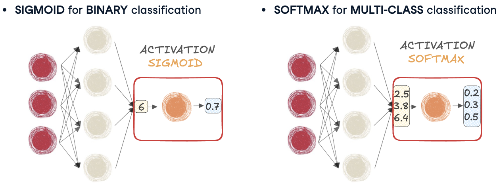
Limitaciones de Sigmoid y Softmax
Comenzaremos por comprender algunas de las limitaciones de la función sigmoidea.
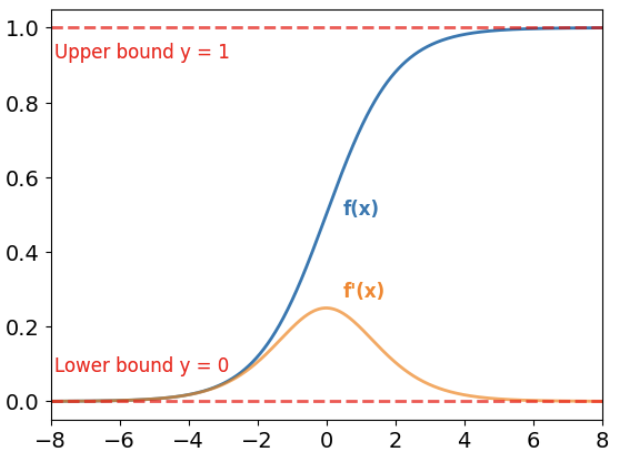
Las salidas de sigmoid están limitadas entre 0 y 1, lo que significa que para cualquier entrada, la salida siempre estará dentro de este rango.
Sigmoid podría usarse en cualquier punto de una red. Sin embargo, los gradientes de la sigmoide, que se muestran en naranja, son muy pequeños para valores grandes y pequeños de \(x\). Este fenómeno se llama saturación. Durante la retropropagación, esto se vuelve problemático porque cada gradiente depende del anterior. Cuando los gradientes son extremadamente pequeños, no logran actualizar los pesos de manera efectiva.
Este problema se conoce como el problema de los gradientes avanescentes y puede dificultar mucho el entrenamiento de redes profundas.
La función softmax, que también produce salidas acotadas entre 0 y 1, sufre saturación de manera similar.
Por tanto, ambas funciones de activación no son ideales para capas ocultas y es mejor utilizarlas solo en la última capa.
ReLU
Descubriremos dos funciones de activación ampliamente utilizadas, diseñadas para su uso entre capas lineales o en capas ocultas.
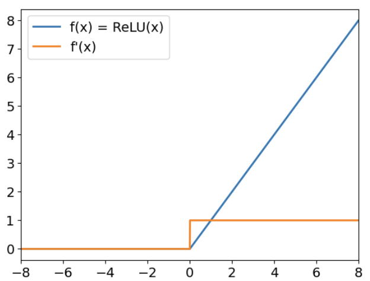
\(f(x) = \max(x,0)\) aquí está la unidad lineal rectificada o ReLU. ReLU genera el valor máximo entre su entrada y cero. Como se muestra en el gráfico.
Para entradas positivas, la salida es igual a la entrada.
Para entradas negativas, la salida es cero.
Esta función no tiene límite superior y sus gradientes no se aproximan a cero. Para valores grandes de \(x\), lo que ayuda a superar el problema de los gradientes que desaparecen.
En PyTorch, ReLU se puede utilizar a través del módulo torch.nn
relu = nn.ReLU()Leaky ReLU (ReLU con fugas)
La ReLU con fugas es una variación de la función ReLU. Para entradas positivas, se comporta exactamente como ReLU.
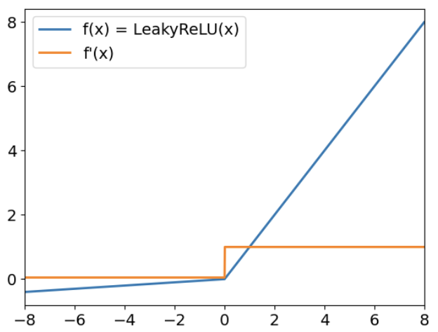
Para entradas positivas, se comporta exactamente como ReLU.
Para entradas negativas, multiplica la entrada por un coeficiente pequeño (predeterminado a 0.01 en PyTorch).
Esto garantiza que los gradientes para entradas negativas permanezcan distintos de cero, lo que evita que las neuronas dejen de aprender por completo, lo que puede suceder con ReLU estándar.
En PyTorch, la función ReLU con fugas se implementa utilizando el módulo torch.nn.
leaky_relu = nn.LeakyReLU(
negative_slope = 0.05
)El parámetro negative_slope controla el coeficiente aplicado a las entradas negativas.
Tasa de Aprendizaje
Hemos hablado anteriormente sobre la tasa de aprendizaje, pero llego el momento de que profundicemos más.
Actualización de Pesos con SGD
Entrenar una red neuronal significa = resolver una optimización. El problema planteado es minimizar la función de pérdida y ajustando los parámetros del modelo.
- Para ello utilizamos un algoritmo llamado descenso de gradiente estocástico, o SGD, implementado en PyTorch.
sgd = optim.SGD(model.parameters(), lr = 0.01, momentum = 0.95)Recuerde que este es el optimizador que usamos para encontrar el mínimo global de las funciones de pérdida.
El optimizador toma los parámetros del modelo junto con dos argumentos claves:
- Tasa de aprendizaje: controla el tamaño del paso de las actualizaciones.
- momentum: añade inercia para ayudar al optimizador a moverse con suavidad y evitar atascarse.
- Tasa de aprendizaje: controla el tamaño del paso de las actualizaciones.
Impaco de learning rate: tasa de aprendizaje óptima
Comprender su impacto nos ayuda a optimizar la eficiencia.
Intentemos encontrar el mínimo de una función en forma de U.
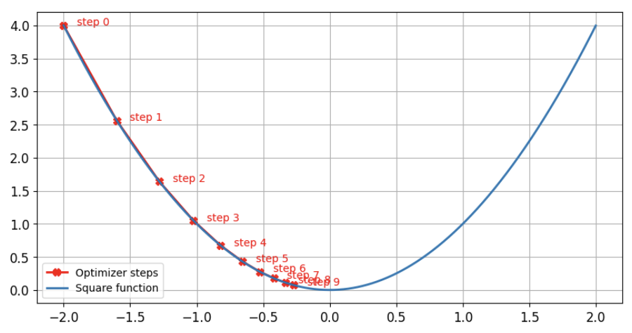
Comenzamos en \(x = -2\) y ejecutamos el optimizador SGD durante diez pasos. Luego de estos pasos observamos que el optimizador está cerca del mínimo.
También podemos observar que a medida que nos acercamos al mínimo, el tamaño del paso disminuye gradualmente. Esto sucede porque el tamaño del paso es el gradiente multiplicado por la tasa de aprendizaje. Como la función es menos pronunciada cerca de cero, el gradiente, y por tanto el tamaño del paso, se hace más pequeño.
Impacto de learning rate tasa de aprendizaje pequeña
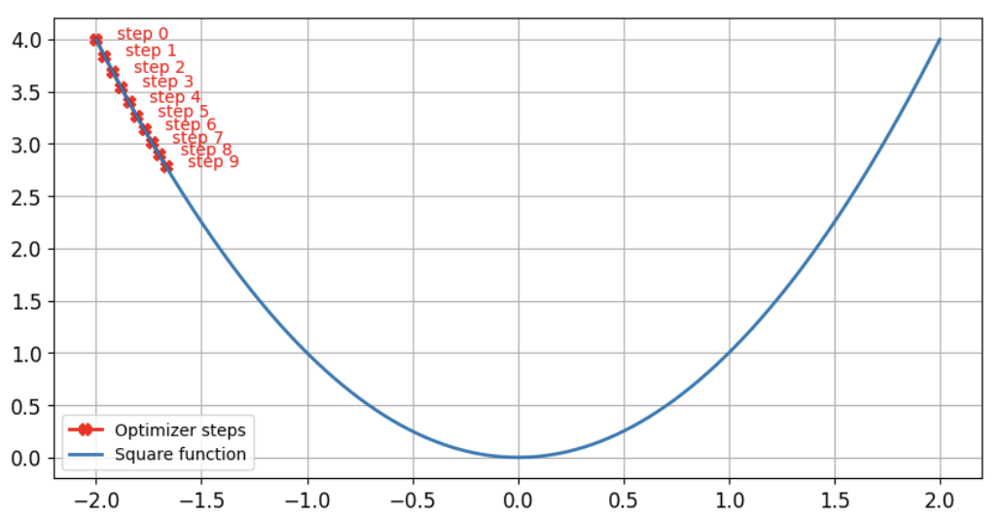
Sin embargo, si utilizamos el mismo algoritmo para un aprendizaje, si reducimos la velocidad diez veces, nos damos cuenta de que todavía estamos lejos del mínimo de la función después de diez pasos. El optimizador tardará mucho más tiempo en encontrar el mínimo de la función.
Impacto learning rate: tasa de aprendizaje alto
Si utilizamos un valor alto para la tasa de aprendizaje, observamos que el optimizador no puede encontrar el mínimo y rebota de un lado a otro en ambos lados de la función.
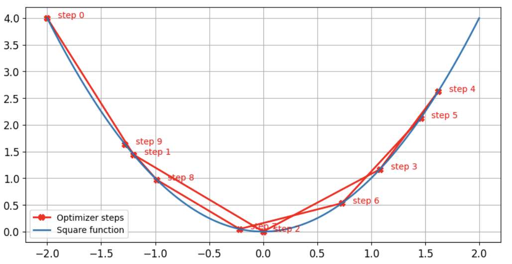
Recuerde que las funciones de pérdida no son convexas.
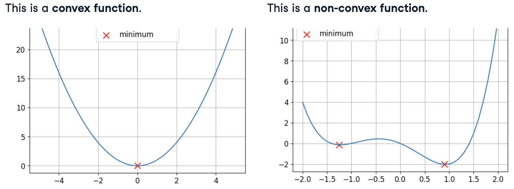
Uno de los desafíos al intentar encontrar el mínimo de una función no convexa es quedarse atrapado en un mínimo local.
Sin momentum
\(lr = 0.01\) \(momentum = 0\), ejecutemos nuestro optimizador durante 100 pasos con un momento nulo en esta función no convexa para \(x = -1.23\) y \(y = -0.14\).
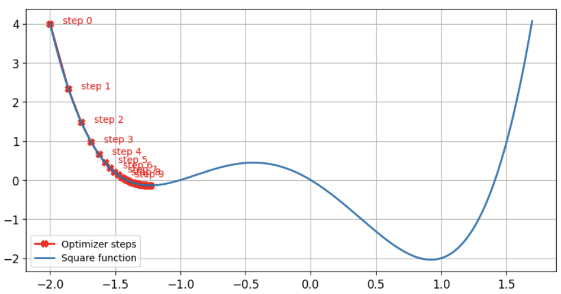- Vemos que el optimizador se queda atascado en esta primera caída de la función, que no es su mínimo global.
Sin embargo, al utilizar lr = 0.01, momentum = 0.9 ejecutando nuestro optimizador durante 100 pasos para \(x = 0.92\) y \(y = -2.04\). Podemos encontrar el mínimo de la función.
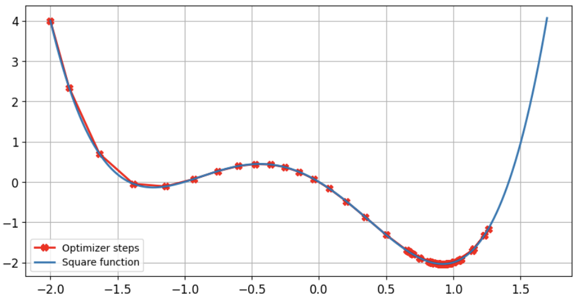
Este parámetro proporciona impulso al optimizador permitiendole superar caídas locales, como se muestra en la figura previa.
El impulso (momentum) mantiene el tamaño del paso grande cuando los pasos anteriores también fueron grandes, incluso si el gradiente actual es pequeño.
Summary
Enr esumen, dos parámetros optimizadores clave impactan el entrenamiento: la tasa de aprendizaje (learning rate) y el impulso (momentum):
| Learning Rate | Momentum |
|---|---|
| Controla el tamaño del paso | Controla la inercia |
| Valor de tasa alta -> bajo rendimiento | Ayuda a escapar de mínimos locales |
| Valor de tasa bajo -> entrenamiento lento | Demasiado pequeño -> el optimizador se queda atascado |
| Valores tipicos varían de 0.01 a 0.0001. | Rango típico: 0.85 a 0.99 |
El momentum y learning rate son críticos par el entrenamiento de tu red neuronal. Una buena regla general es comenzar con una learning rate de 0.001 y un momentum de 0.95.
Evaluación y Mejora de los Modelos
Entrenar un modelo de aprendizaje profundo es un arte, y para asegurarnos de que nuestro modelo se entrene correctamente, necesitamos hacer un seguimiento de ciertos parámetros durante el entrenamiento, como la pérdida o la exactitud. Aprenderemos a calcular estas métricas y a reducir el sobreajuste.
Inicialización de capas y aprendizaje por transferencia
Hemos explorado cómo las redes neuronales aprenden actualizando los pesos durante el entrenamiento. Este capítulo final analizará técnicas para evaluar y mejorar la eficiencia del rendimiento del modelo.
Antes de comenzar, tenga en cuenta que los temas aquí son más avanzados y los cubriremos aun alto nivel.
Inicialización de Capa
La normalización de datos escala las características de entrada para lograr estabilidad; de manera similar, los pesos de una capa lineal también se inicializan en valores pequeños. Esto se conoce como inicialización de capa.
Creemos una pequeña capa lineal y verifiquemos su rango de peso.
import torch.nn as nn
layer = nn.Linear(64, 128)
print(layer.weight.min(), layer.weight.max())tensor(-0.1250, grad_fn=<MinBackward1>) tensor(0.1250, grad_fn=<MaxBackward1>)Observemos que los pesos están entre -0.1250 y \(\pm\) 0.125
Por qué es esto importante?
La salida de una neurona en una capa lineal es una suma ponderada de las entradas de la capa anterior.
Mantener pequeños tanto los datos de entrada como los pesos de las capas garantiza salidas estables, evitando valores extremos que podrían ralentizar el entrenamiento.
Las capas de pueden inicializar de diferentes maneras y sigue siendo un área de investigación activa.
PyTorch proporciona una forma sencilla de inicializar los pesos de las capas con el módulo nn.init.
layer = nn.Linear(64, 128)
nn.init.uniform_(layer.weight)
print(layer.weight.min(), layer.weight.max())tensor(6.4969e-05, grad_fn=<MinBackward1>) tensor(1.0000, grad_fn=<MaxBackward1>)Por ejemplo, aquí inicializamos una capa lineal con una distribución uniforme. Como puedes ver, los valores de los pesos ahora varían de 0 a 1.
Aprendizaje por Transferencia
En la práctica, los ingenieros rara vez entrenan un modelo a partir de pesos inicializados aleatoriamente. En lugar de ello, se basan en un concepto llamado aprendizaje por transferencia.
El aprendizaje por transferencia toma un modelo que fue entrenado en una primera tarea y lo reutiliza para una segunda tarea. Por ejemplo, entrenamos un modelo sobre los salarios de los científicos de datos en EE.UU.
Ahora tenemos nuevos datos de los salarios en Europa. En lugar de entrenar un modelo usando pesos inicializados aleatoriamente, podemos cargar los pesos del primer modelo y usarlos como punto de partida para entrenar en este nuevo conjunto de datos.
Se pueden guardar y cargar pesos utilizando las funciones torch.save y torch.load
import torch
layer = nn.Linear(64, 128)
torch.save(layer, 'layer.pth')
new_layer = torch.load('layer.pth')Estas funciones funcionan en cualquier tipo de objetos de PyTorch.
Ajuste Fino
A veces, la segunda tarea es similar a la primera tarea: queremos realizar un tipo específico de aprendizaje por transferencia llamado ajuste fino.
En este caso, cargamos pesos de un modelo previamente entrenado, pero entrenamos el modelo con una tasa de aprendizaje más pequeña.
Incluso podemos entrenar parte de una red, si decidimos que alguna de las capas de red no necesitan ser entrenadas y elige congelarla.
Una regla general es congelar las primeras capas de la red y ajustar las capas más cercanas a la capa de salida.
Esto se puede lograr estableciendo el atributo requires_grad de cada parámetro en Falso.
model = nn.Sequential(nn.Linear(64, 128),
nn.Linear(128, 256))
for name, param in model.named_parameters():
if name == '0.weight':
param.requires_grad = FalseAquí, utilizamos el método named_parameters() del modelo, que devuelve el nombe y el parámetro en sí.
Evaluación del Rendimiento de los Modelos
Hemos realizado mucho entrenamiento. Ahora vamos a evaluar nuestros modelos. En el Machine Learning, los datos se dividen en conjuntos de entrenamiento, validación y prueba.
| Training | 80-90% | Ajusta los parámetros del modelo |
| Validación | 10 - 20% | Ajusta los hiperparámetros del model |
| Test | 5 - 10% | Evalúa el rendimiento final del modelo |
Los datos de entrenamiento ajustan los parámetros del modelo, como pesos y sesgos, y los datos de validación ajustan hiperparámetros como la tasa de aprendizaje y el impulso, y el conjunto de pruebas evalúa el rendimiento final del modelo.
Realizaremos un seguimiento de dos métricas clave: pérdida y precisión durante el entrenamiento y la validación.
Calculando Pérdida de Entrenamiento
La pérdida de entrenamiento se calcula sumando la pérdida de todos los lotes en el cargador de datos de entrenamiento.
Al final de cada época (epoch), calculamos la pérdida de entrenamiento media dividiendo la pérdida total por el número de epoch.
training_loss = 0.0
for inputs, labels in trainloader:
outputs = model(inputs)
loss = criterion(outputs, labels)
loss.backward()
optimizer.step()
optimizer.zero_grad()
training_loss += loss.item()
epoch_loss = training_loss / len(trainloader)Iteramos a través del cargador de entranamiento, ejecutamos un pase hacia adelante y calculamos la pérdida. Como es habitual, el modelo calcula gradiente y actualiza pesos mediante retropropagación. Y agregamos cada valor de pérdida al total usando .item(), que extrae el valor numérico de u tensor.
Dqdo que una epoch es un paso completo a través del cargado de datos de entrenamiento, calculamos la pérdida media dividiendo training_loss por el número de lotes en el cargador de train.
Calculo de la pérdida de validación
Después de cada epoch de entrenamiento, ejecutamos un ciclo de validación.
Primero, establecemos el modelo en modo evaluación usando
.eval(),como algunas capas se comportan de manera diferente durante el entrenamiento y la validación.Para mejorar la eficiencia, utilizamos
torch.no_grad(), que deshabilita cálculos de gradiente ya que no actualizamos los pesos durante la validación.Luego, iteramos a través del cargador de datos de validación, ejecutamos un pase hacia adelante y calculamos la pérdida, sumándola en los lotes.
Al final de la época, calculamos la pérdida de validación media.
Finalmente, volvemos al modo de entrenamiento con .
train(), preparándolo para la siguiente epoch de entrenamiento.
validation_loss = 0.0
model.eval()
with torch.no_grad():
for inputs, labels in validationloader:
outputs = model(inputs)
loss = criterion(outputs, labels)
validation_loss += loss.item()
epoch_loss = validation_loss / len(validationloader)
model.train()
Sobreajuste o Overfitting
Realizar un seguimiento de la pérdida de entrenamiento y validación nos ayuda a detectar el sobreajuste.
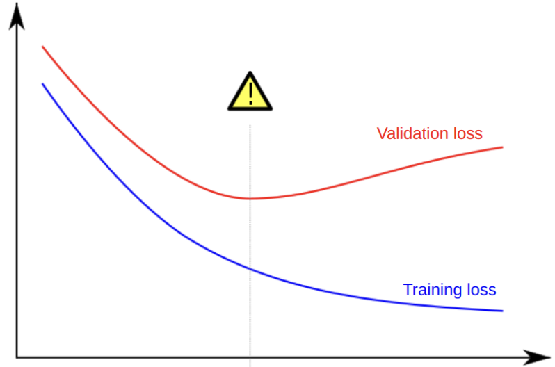
Cuando un modelo se sobreajusta, la pérdida de entrenamiento continúa disminuyendo, pero la pérdida de validación comienza a aumentar. Esto significa que el modelo está aprendiendo demasiado bien los datos de entrenamiento y no funcionará bien con datos nuevos.
Calculando accuracy con torchmetrics
La pérdida nos indica qué tan bien está aprendiendo un modelo, pero no siempre refleja con qué precisión hace predicciones.
Hacemos un seguimiento de la precisión utilizando torchmetrics.
Para tareas de clasificación de múltiples clases, creamos una métrica de precisión con
torchmetrics.Accuracy()A medida que el modelo procesa cada lote, actualizamos esta métrica utilizando sus predicciones y las etiquetas reales.
Dado que el modelo genera probabilidades para múltiples clases, podemos utilizar
argmax(dim=-1)para seleccionar la clase con mayor probabilidad. Esto convierte las predicciones codificadas one-hot en índices de clase antes de pasarlas a la métrica.Al final de cada epoch, calculamos la precisión general utilizando
.compute().Finalmente, reiniciamos la métrica con
.reset()para borrar su estado antes de la próxima epoch.
import torchmetrics
metrics = torchmetrics.Accuracy(task = "multiclass", num_classes = 3)
for features, labels in dataloader:
outputs = model(features)
metrics.update(outputs, labels.argmax(dim=-1))
accuracy = metrics.compute()
metric.reset()
Lucha contra el Sobreajuste
Anteriormente, aprendimos cómo detectar el sobreajuste observando las pérdidas de entrenamiento y validación. Ahora, descubriremos algunas formas de combatir el sobreajuste.
Recuerde que el sobreajuste ocurre cuando el modelo no se generaliza a datos no vistos. Si no entrenamos correctamente el modelo, comenzará a memorizar los datos de entrenamiento, lo que conduce a un buen rendimiento en el conjunto de entrenamiento pero a un rendimiento deficiente en el conjunto de validación.
Posibles causas:
| Problema | Solución |
|---|---|
| Conjunto de datos pequeños | Más data |
| Modelo con demasiada capacidad | Reducir el tamaño del modelo |
| Valores grandes de los pesos | Reducir los valores de los pesos |
Para contrarrestar el sobreajuste, podemos reducir el tamaño del modelo o agregar un nuevo tipo de capa llamada dropout.
También podemos utilizar la descomposición del peso para forzar que los parámetros permanezcan pequeños.
Para obtener más datos o utilizar la ampliación de datos
Exploremos estas estrategías.
Regularización usando una capa dropout
Una forma común de combatir el sobreajuste es agregar capas dropout a nuestra red neuronal.
El dropout es una técnica de regularización que desactiva aleatoriamente una fracción de las neuronas durante el entrenamiento, evitando que el modelo se vuelva demasiado dependiente de características específicas.
- Las capas dropout normalmente se agregan después de las funciones de activación.
model = nn.Sequential(nn.Linear(8, 4),
nn.ReLU(),
nn.Dropout(p = 0.5))
features = torch.randn((1, 8))
print(model(features))tensor([[0.4203, 0.0000, 0.0000, 0.0000]], grad_fn=<MulBackward0>)El argumento p determina la probabilidad de que una neurona se establezca en cero. En este ejemplo se descartan el 75% de las neuronas.
El dropout se comporta de manera diferente durante el entrenamiento y la evaluación, durante el entrenamiento, desactiva neuronas aleatoriamente, mientras que durante la evaluación se deshabilita, lo que garantiza que todas las neuronas estén activas para obtener predicciones estables.
Para cambiar entre estos modos, utilizamos model.train() y model.eval()
Regularización con disminución de pesos
La siguiente estratefia para reducir el sobreajuste que descubriremos es la disminución de pesos, otra forma de regularización.
En PyTorch, la disminución del peso se agreha al optimizador mediante el parámetro weight_decay, normalmente establecido en un valor pequeño, por ejemplo 0.0001. Este parámetro agrega una penalización a la función de pérdida, formando pesos más pequeños y ayudando al modelo a generalizar mejor.
optimizer = optim.SGD(model.parameters(), lr = 0.001, weight_decay = 0.0001)Durante la retropropagación, esta penalización se resta del gradiente, lo que evita un crecimiento excesivo del peso.
Cuanto más alto fijemos la caída del peso, más fuerte será la regularización y hará que el sobreajuste sea menos probable.
Aumentación de Data
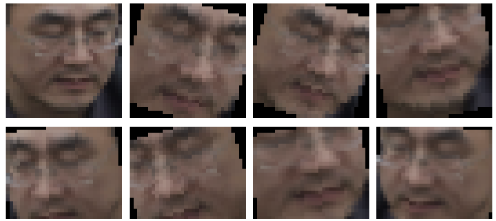
Recopilar más datos puede ser costoso, pero los investigadores han encontrado una forma de expandir conjuntos de datos artificialmente usando aumento de datos.
El aumento de datos se aplica comúnmente a los datos de imágenes, que se pueden rotar y escalados, de modo que diferentes vistas de la misma cara estén disponibles como puntos de datos nuevos.
Si bien no analizaremos aquí como aumentar los datos, sigue siendo un método valioso para combatir el sobreajuste cuando no hay datos adicionales disponibles.
Mejorar el Rendimiento del Modelo
En esta sessión final, reuniremos todo y aprenderemos una receta para abordar cualquier problema de Deep Learning.
Primero, creamos un modelo que pueda sobreajustarse al conjunto de entrenamiento. Esto garantizará que el problema tenga solución. También establecemos un línea base de rendimiento a la que aspirar con el conjunto de validación.
Luego, necesitamos reducir el sobreajuste para aumentar el rendimiento en el conjunto de validación.
Por último, podemos ajustar ligeramente los diferentes hiperparámetros para garantizar que logremos el mejor rendimiento posible.
Es útil comenzar con un solo punto de datos antes de sobreajustar todo el conjunto de entrenamiento.
features, labels = next(iter(dataloader))
for i in range(1000):
outputs = model(features)
loss = criterion(outputs, labels)
optimizer.zero_grad()
loss.backward()
optimizer.step()Cuando el modelo está configurado correctamente, debería alcanzar rápidamente una pérdida a cero y una predicción del 100% en ese punto de datos. Una vez que este paso sea exitoso, escalamos al conjunto de entrenamiento completo.
En esta etapa, utilizamos una arquitectura de modelo existente lo suficientemente grande como para sobreajustar mientras mantiene los hiperparámetros, como la tasa de aprendizaje, en sus valores predeterminados.
Ahora necesitamos crear un modelo que se generalice bien para maximizar la precisión de la validación.
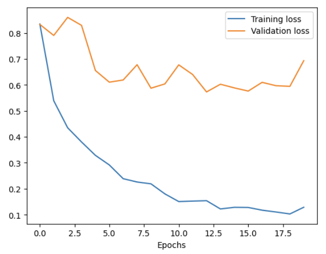
Reducir el sobreajuste a menudo tiene un costo, ya que aplicar la regularización puede afectar significativamente el rendimiento del modelo.
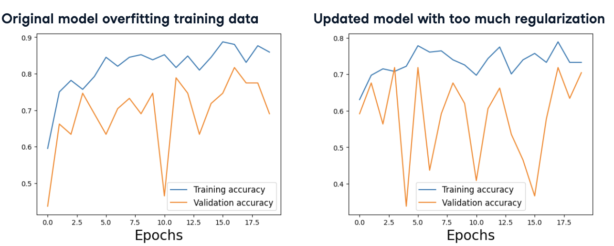
El modelo original se ajusta al conjunto de entrenamiento, logrando una alta precisión pero sin generalizarse bien a datos nuevos. Por el contrario, con demasiada regularización, el modelo actualizado muestra una caída en la precisión del entrenamiento y la validación, lo que limita su capacidad de aprender de manera efectiva. Esto resalta la importancia de equilibrar la reducción del sobreajuste.
Estrategías mientras monitoreamos de cerca las métricas clave para encontrar el modelo con mejor rendimiento.
Una vez que estemos satisfechos con el rendimiento, el paso final es ajustar los hiperparámetros. Esto se hace a menudo en configuraciones del optimizador, como la tasa de aprendizaje o el impulso.
La busqueda de cuadrícula prueba parámetros a intervalos fijos. Por ejemplo, valores de impulso de 0.85 a 0.99 y tasas de aprendizaje de diez elvado a menos seís
# Grid Search
for factor in range(2, 6):
lr = 10 ** -factor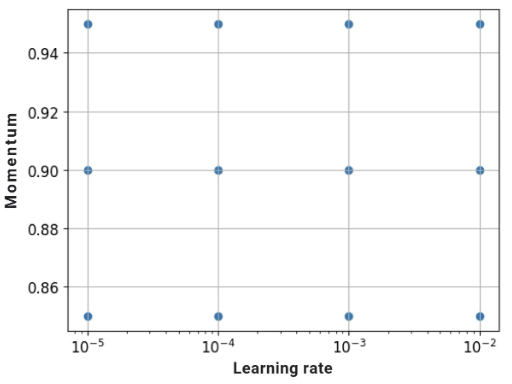
La búsqueda aleatoria adopta un enfoque diferente. En lugar de probar valores establecidos, los seleccionamos aleatoriamente dentro de un rango determinado. La función np.random.uniform(2, 6), por ejemplo, elige un número entre 2 y 6, lo que nos permite explorar una variedad más amplia de ritmos de aprendizaje.
factor = np.random.uniform(2, 6)
lr = 10** - factor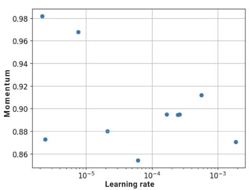
La búsqueda aleatoria suele ser más eficiente, ya que evita pruebas innecesarias y aumenta la posibilidad de encontrar configuraciones óptimas.